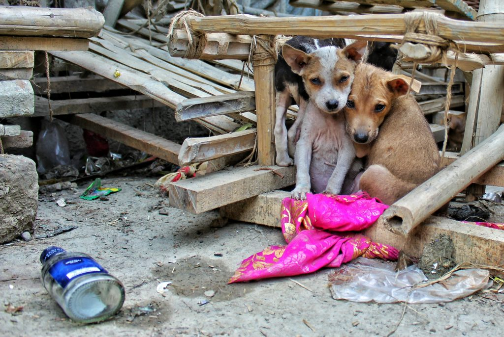
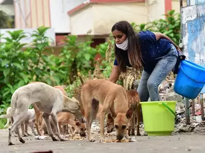

Animal Rescue
Animal rescue is the process of safely and humanely capturing, treating, and releasing animals that are in distress. Rescuers are alerted by concerned citizens, who report sick or injured animals to local authorities. Rescuers then evaluate and treat the animal before releasing it back into the wild or finding it a suitable adoptive home. Animal rescue is crucial for protecting the welfare of animals and the environment, and requires specialized training and equipment to be performed effectively.
Feeding Sessions
we conduct feeding sessions for stray animals to ensure they receive regular meals and hydration. We coordinate with volunteers to provide food and water at designated locations and times, often in public spaces where strays are known to congregate. During feeding sessions, we also monitor the animals' health and behavior, and identify any in need of medical attention or adoption. Our goal is to improve the well-being of stray animals and promote responsible pet ownership in our community.